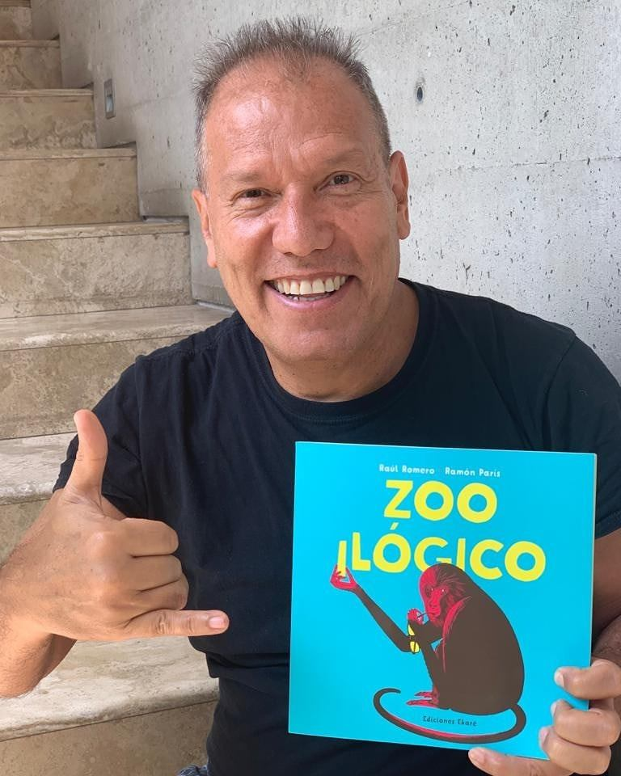

Raúl Romero

El vocalista de Los Nosequién y los Nosecuántos actualmente se encuentra trabajando en otras propuestas alejadas de la televisión, aunque sí ligadas a su humor y creatividad, como lo es su primer libro infantil Zooilógico. “Es un libro de adivinanzas que yo le planteaba a mis hijos, inventadas por mí, con mucho humor”, comenta el músico.
Raúl Gustavo Romero Salazar (Lima, 11 de marzo de 1961) es un presentador de televisión y músico peruano de ascendencia española, conocido principalmente por ser el vocalista del grupo Nosequien y Los Nosecuantos. Actualmente continúa cantando como solista.
Información adicional